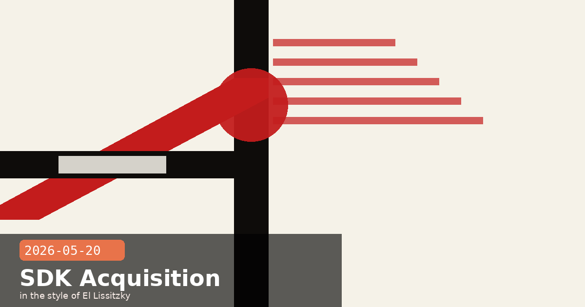

Anthropic Acquires Stainless, Code with Claude London Day 2 & Claude Code v2.1.145

🧭 Anthropic Acquires Stainless — the SDK Factory Behind OpenAI, Google & Cloudflare — for Over $300M
Anthropic has officially confirmed the acquisition of Stainless, the San Francisco startup that automates SDK generation from OpenAPI specs. Founded in 2022 by former Stripe engineer Alex Rattray, Stainless has quietly powered the official SDKs for Anthropic since the earliest API days — and also generated the official client libraries used by OpenAI, Google, Meta, Cloudflare, and hundreds of other companies. The deal, reported at over $300 million, is the largest acquisition Anthropic has made to date.
What Stainless actually does
Stainless takes an OpenAPI spec and generates idiomatic, production-ready SDKs across TypeScript, Python, Go, Java, and Ruby — along with CLI tooling and MCP servers. The resulting libraries handle pagination, retries, streaming, auth, and type safety in ways that hand-rolled SDKs rarely do consistently. It also regenerates them automatically when the API spec changes, which is the part that makes SDK maintenance tractable at scale.
What changes for existing customers
Hosted Stainless tools are being wound down. The managed SDK generation service that OpenAI, Google, and Cloudflare have relied on will be discontinued. Anthropic will not provide these services to competitor AI labs going forward.
Existing SDKs are yours to keep. Companies that generated SDKs through Stainless retain full ownership, plus unrestricted rights to modify and extend those libraries. The code does not disappear — but the maintenance pipeline behind it does.
The Stainless team joins Anthropic to accelerate developer tooling across Claude's API, SDK surface, and MCP ecosystem.
Strategic read
This is a toolchain consolidation play. Every MCP server, every SDK wrapper, every CLI that talks to Claude will now be shaped by the same team that defined how the SDKs are built. For Claude, that means faster iteration on developer-facing infrastructure and tighter integration between the API spec and the client libraries that surface it. For OpenAI and Google, it means rebuilding or migrating a maintenance-critical piece of their developer infrastructure.
What developers should do now
If your stack uses an Anthropic SDK, nothing changes in the near term — these are maintained by Anthropic already. If you're at a company that used Stainless's hosted tool to generate SDKs for your own API, audit your dependency on the service and plan migration now: the wind-down timeline will be communicated by Stainless directly, but prudent teams should not wait. Stainless's open-source tooling (the underlying generator) may survive separately — watch their GitHub for guidance.
# Verify you're on the latest Anthropic-maintained SDK:
pip install --upgrade anthropic
# TypeScript:
npm update @anthropic-ai/sdk
🧭 Code with Claude London Extended — Day 2 Is All About Independent Developers and Early-Stage Founders
The Code with Claude London conference continues today (May 20) with its Extended Day — a separate track designed for independent developers and early-stage founders who couldn't make it to the enterprise-heavy Day 1. Where yesterday's programme was structured around three simultaneous stages with keynotes from Anthropic engineering leadership and enterprise guest companies (Spotify, Lovable, Doctolib, monday.com), today's format is deliberately more accessible: smaller rooms, more hands-on time, and a focus on what builders shipping solo or in very small teams actually need.
Extended Day programme highlights
"Zero-to-agent in an afternoon" — a full hands-on workshop walking through the complete Agent SDK stack from scratch: project setup, tool definition, MCP server wiring, and a working production-ready agent by end of session.
"Claude Code for solo founders" — a practitioner panel on using Claude Code as a force-multiplier when you have no engineering team: how to set up a CLAUDE.md that encodes your entire architecture, managing parallel sessions without losing context, and the permission configurations that matter most when you're both developer and reviewer.
"Getting to your first 1,000 API customers" — startup-specific session on pricing, rate limits, and go-to-market for AI-native products built on Claude. Includes Q&A with Anthropic's developer relations team.
Office hours — 30-minute slots with Anthropic engineers and developer advocates throughout the afternoon.
Why this matters
The dual-format approach — enterprise keynote day followed by indie developer day — is an intentional structural choice. It reflects Anthropic's recognition that the two audiences have different bottlenecks: enterprises need confidence in compliance, managed infrastructure, and partner integrations; indie developers need clarity on cost, capability ceilings, and how to ship fast without a dedicated ML team.
Didn't make it to London?
Selected sessions from both days will be posted to Anthropic's YouTube channel within 48 hours. The Tokyo leg follows on June 10, with a similar two-day structure. For the office hours format, keep an eye on the Anthropic events page — virtual office hours have been trialled after each conference city.
Code with ClaudeLondon 2026indie developersfoundersdeveloper conferenceAgent SDK
🧭 Claude Code v2.1.145: Script Your Agent Sessions with JSON Output and Full OTEL Span Tracing
Yesterday's Claude Code release (v2.1.145) is a small update with outsized implications for teams running multi-agent pipelines at scale. The headline feature is claude agents --json, which outputs a live snapshot of all Claude Code sessions as a machine-readable JSON array — making it trivial to wire Claude's session state into external tooling: status bars, session pickers, tmux-resurrect scripts, monitoring dashboards, and CI gate checks.
What claude agents --json returns
Each session entry in the JSON output includes the session ID, name, current status (running / waiting / done), last output snippet, elapsed time, and whether the session is a background (bg) session or interactive. Combined with the Agent View dashboard (released in v2.1.139), this gives you both a human-readable TUI and a scriptable API over the same session state.
# List all live sessions as JSON:
claude agents --json
# Example output (truncated):
[
{
"id": "sess_01abc...",
"name": "feature-auth",
"status": "waiting",
"bg": true,
"elapsed": "00:14:22",
"last_output": "Waiting for permission: write src/auth/..."
},
...
]
# Pipe into jq to find sessions waiting for input:
claude agents --json | jq '.[] | select(.status == "waiting")'
OTEL span improvements
v2.1.145 also landed two OpenTelemetry improvements that matter for teams instrumenting Claude Code inside larger observability pipelines:
agent_id and parent_agent_id attributes are now added to all claude_code.tool OTEL spans. This lets you filter your trace data by which agent (or subagent) produced a given tool call — critical when parallel sessions are producing tool spans in the same trace.
Corrected trace parenting — background subagent spans now nest correctly under the dispatching Agent tool span, rather than appearing as orphaned top-level spans. Distributed traces across multi-agent chains now render as a coherent tree in Jaeger, Honeycomb, and Datadog.
Quality-of-life additions
Status-line JSON input now surfaces GitHub repo name and current PR number when a Git remote is detected — useful for status-bar integrations.
/plugin Discover and Browse screens now show a plugin's full manifest — commands, agents, skills, hooks, MCP/LSP servers — before you install it. No more installing blind.
The claude agents terminal tab title now shows the awaiting-input count (claude agents [3 waiting]) so you can see at a glance from an alt-tabbed window which agents need attention.
Practical use: a one-liner CI gate
With claude agents --json, you can write a simple CI check that fails the pipeline if any active Claude Code background session has been in "waiting" state for more than a configurable threshold — catching stuck agents before they hold up a release branch.
# Fail CI if any bg session has been waiting > 30 min:
claude agents --json \
| jq -e '[.[] | select(.status=="waiting" and .bg==true
and (.elapsed | strptime("%H:%M:%S") | mktime) > 1800)]
| length == 0'